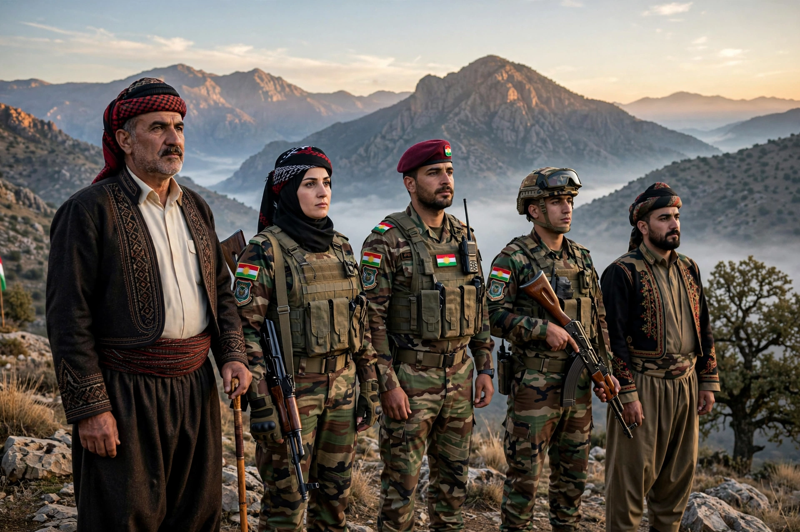

The Peshmerga (Kurdish: پێشمەرگە, Pêşmerge, lit. "those who face death") are the military forces of the Kurdistan Region of Iraq. They are responsible for defending the land, people, and institutions of the Kurdistan Region, an autonomous federal region within Iraq.

| Founded | Early 20th century (origins); modern force post-1992 |
|---|---|
| Country | Kurdistan Region, Iraq |
| Type | Army / regional guard |
| Role | Defense of the Kurdistan Region |
| Headquarters | Erbil |
| Ministry | Ministry of Peshmerga Affairs |
The term Peshmerga dates to the short-lived Republic of Mahabad in 1946, whose army under Mustafa Barzani adopted the name. Kurdish guerrilla fighters under the Kurdistan Democratic Party (KDP) and later the Patriotic Union of Kurdistan (PUK) fought successive Iraqi governments for decades, retreating to the mountains after the collapse of the 1974–75 revolt. During the Iran–Iraq War, Kurdish forces allied at times with Iran; Saddam Hussein's Anfal campaign of 1988, including the chemical attack on Halabja, devastated Kurdish communities.
After the 1991 Gulf War and the establishment of a no-fly zone, the Kurdistan Region gained de facto autonomy, and the Peshmerga became its standing armed force. A Kurdish civil war in the mid-1990s split the force between KDP and PUK commands, a division that reform efforts have sought to overcome.
In 2014, Peshmerga forces became front-line combatants against the Islamic State (ISIL) after the Iraqi Army collapsed in northern Iraq. Supported by US-led coalition airstrikes, they defended Erbil, retook territory including areas around Mosul and Kirkuk, and fought at Kobani in support of Syrian Kurdish forces. Female Peshmerga units drew international attention.
The Peshmerga are administered by the Ministry of Peshmerga Affairs of the Kurdistan Regional Government, though many brigades historically remained loyal to the KDP or PUK. Coalition-supported reform programs aim to unify command, professionalize training, and bring all brigades under ministry control. Estimates of strength vary widely, commonly cited between 150,000 and 200,000 personnel including reserves.
See also: Kurdistan Region · Kurdistan Democratic Party · Patriotic Union of Kurdistan